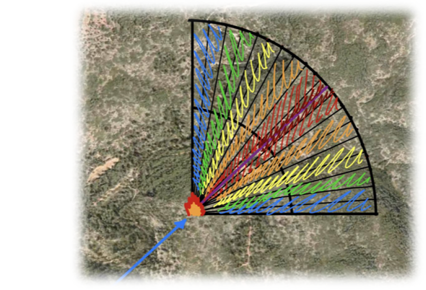
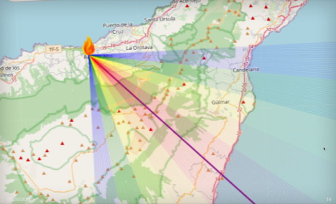

Spot the Fire, Anytime,Anywhere!
Your Ultimate Fire
Forecasting App.
Stay sharp, stay safe.
Predicting the future, one fire at a time.
Free app launch.

Meet Juande Team : We are a group of passionate innovators,
engineers, and developers working tirelessly to keep you ahead of
the flames. We're committed to making your safety our priority, one
innovative feature at a time. Together, we're redefining fire
prediction. Trust in FireSpotter, trust in our team.
Team
App functions
1.- Advanced Fire Prediction:
Our Team has developed an algorithim that show us the fire path according to some forecast
variables.
2.- Real Time Monitoring:
We use the FIRMS API data, to spot the fire and locate
it in real time.
3.- Working:
When a fire shows up on FIRESPOTTER, our algorithm
creates a fire propagation cone, with some colors:
High pathing percentage [90-100]
Medium-High pathing percentage
[80-90]
Medium pathing percentage [70-80]
Medium-Low pathing
percentage [60-70]
Low pathing percentage [50-60]

From Flames to Frames:
Switch Satellites, Find the Flames!
Demo Case
This is a demo case, that shows us how Firespotter predicts the fire
path.


In August 2023, Tenerife Island faced a devastating wildfire,
devouring nearly 7,000 hectares.
This is a demo case, and the
image speaks volumes. The fire propagation cone blankets nearly 70%
of the fire footprint, showcasing the remarkable strength of this
tool.